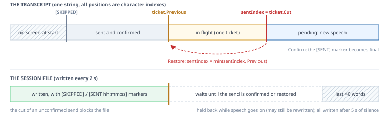
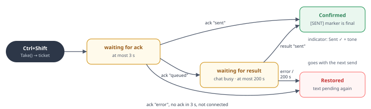

حالا که یک رونوشت قابلاعتماد داریم، «چه چیزی فرستاده شود» تقریباً ساده است: یک عدد به نام sentIndex
رونوشت را به دو بخش تقسیم میکند — قبل از آن فرستاده شده، بعد از آن pending است. سختترین بخش این است که
ارسال ممکن است شکست بخورد، و آن وقت هیچ کلمهای نباید گم شود.

با فشردن کلید، متد Take متن pending را برمیدارد و یک ticket میسازد که دو عدد دارد: جای قبلی
sentIndex و جای برش (انتهای متن برداشتهشده). sentIndex همان لحظه به انتها میرود — یعنی
خوشبینانه فرض میشود ارسال موفق است. بعد یکی از دو اتفاق میافتد:
Confirm) — افزونه گفت ارسال شد؛ برچسب [SENT] در فایل جلسه قطعی میشود.Restore) — خطا، بیجوابی یا قطع اتصال؛ sentIndex به جای قبلی ticket برمیگردد و آن
متن دوباره pending میشود تا با ارسال بعدی، همراه حرفهای تازه، برود.
sentIndex تا رسیدن جواب جابهجا نمیشد، فشار دوم کلید در همان چند میلیثانیه همان متن را دوباره
میفرستاد. با جابهجایی فوری، فشار دوم فقط حرفهای تازه را برمیدارد.min(sentIndex, Previous) اشارهگر را فقط عقب میبرد، هرگز جلو؛ پس اگر یکی از آنها شکست بخورد، متن آن
و هر چه بعدش آمده دوباره pending میشود. در بدترین حالت چیزی دو بار میرود، ولی هیچ چیز جا نمیماند.MapIndex رد میشوند؛ پس
بازنویسیهای Live Captions هیچکدام را خراب نمیکند.
کلید F9 متد Skip را صدا میزند: sentIndex به انتها میرود، بدون ارسال، و برچسب
[SKIPPED] در فایل نوشته میشود. متنی که هنگام شروع اپ روی صفحه است هم دقیقاً همینطور رفتار میشود.
شرط حداقل طول (minSendChars، پیشفرض ۳) جلوی ارسالهای بیمعنی مثل یک ok را میگیرد: پیام Nothing new.
sessions/yyyy-MM-dd_HHmm.txt است که کل گفتوگو با برچسبهای زماندار را دارد؛ حتی
وقتی Live Captions متن را از صفحه دور ریخته باشد.[SENT] فقط برای ارسالهایی بیاید که واقعاً رسیدهاند.sessions در git نادیده گرفته میشود.حدود چهار دقیقه گفتار بدون فشردن هیچ کلیدی، سپس یک Ctrl+Shift: یک پیام ۶۲۳ کلمهای (متن اصلی ۶۲۲ کلمه، ۹۷٫۴٪
به ترتیب درست)، ۸۰ میلیثانیه بعد از فشردن کلید در Gemini ارسال شد. افزونه خاموش: پیام not connected و متن نگه
داشته شد؛ بعد از روشن شدن، متن نگهداشتهشده همراه متن تازه رفت.
The transcript is one string and sentIndex splits it into sent and pending. A send is a ticket: Take moves sentIndex to the end optimistically and records where it was. On a successful ack the ticket is confirmed; on any failure it is restored, so the text becomes pending again and goes out with the next send. Every stored position is remapped on each merge. The session file is append-only, holds back the last 40 words while they may still change, and only writes a SENT marker once delivery is confirmed.